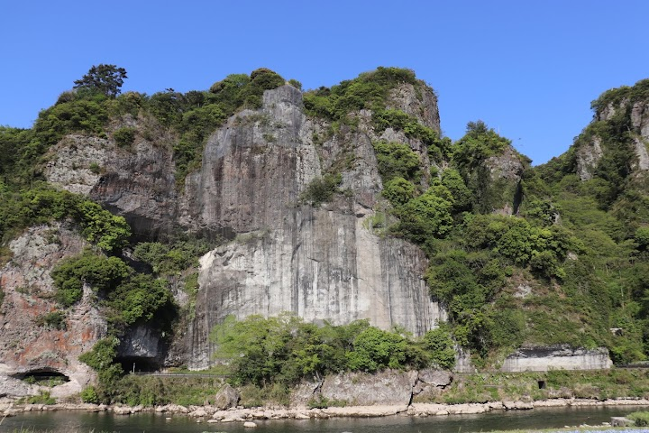
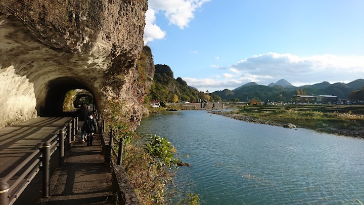
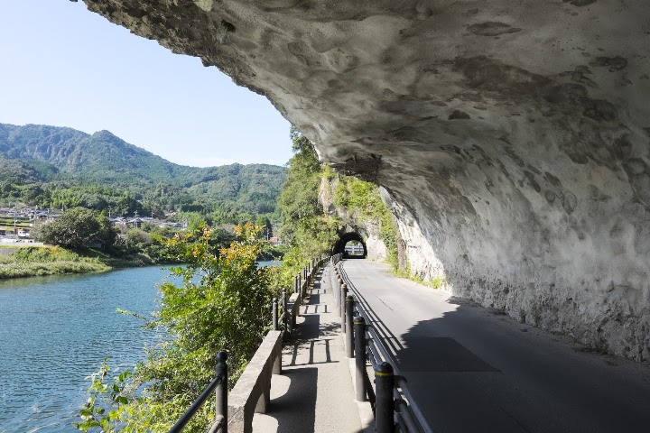
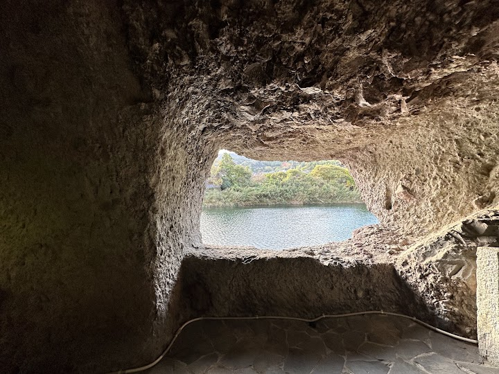
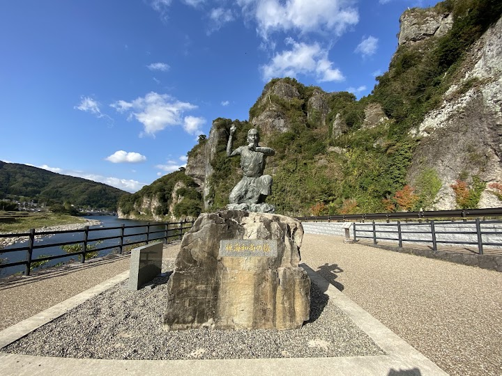

Aonodōmon
Aonodomon is a tunnel beside the river that a Buddhist monk, Zenkai, hand-carved over about 30 years in the Edo period to make a safe path for travellers. Visitors say to check which entrance is open, because a part was closed for renovation.
Open in Google Maps (street view, more photos and reviews there)






Visitor tips on finding it and getting there
An interesting history here. It's a shame that in more modern times a road has been carved through this magnificent cliff, only to be closed due to rock fall hazard. Still, a nice quiet place to go for a walk and enjoy some scenery.